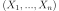
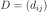
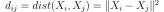
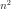
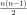

Pairwise distances with ONNX (pdist)¶
Links: notebook, html, PDF, python, slides, GitHub
Function pdist computes pairwise distances between observations in n-dimensional space. It is not that difficult to convert that into ONNX when the dimension of the input is always the same. What if not?
from jyquickhelper import add_notebook_menu
add_notebook_menu()
%load_ext mlprodict
The mlprodict extension is already loaded. To reload it, use:
%reload_ext mlprodict
Function pdist¶
The function pdist distances. Let’s denote a list of vectors , function pdist returns the matrix  where .
import numpy
from scipy.spatial.distance import pdist, squareform
M = numpy.array([[0, 1],
[1, 2],
[0.1, 1.1],
[2, 2]], dtype=float)
d1 = squareform(pdist(M, metric='sqeuclidean'))
d1
array([[0. , 2. , 0.02, 5. ],
[2. , 0. , 1.62, 1. ],
[0.02, 1.62, 0. , 4.42],
[5. , 1. , 4.42, 0. ]])
The two following functions are implemented to reduce the number of allocations the algorithm requires.
def custom_pdist(M):
n = M.shape[0]
res = numpy.zeros((n, n))
buffer = numpy.empty(M.shape)
for i in range(n):
numpy.subtract(M, M[i], out=buffer) # broadcasted substraction
numpy.square(buffer, out=buffer)
res[i, :] = numpy.sum(buffer, axis=1)
return res
d2 = custom_pdist(M)
d2
array([[0. , 2. , 0.02, 5. ],
[2. , 0. , 1.62, 1. ],
[0.02, 1.62, 0. , 4.42],
[5. , 1. , 4.42, 0. ]])
This function computes  distances wheres only  are necessary since the final matrix is symmetric. Let’s change the implementation to reflect that.
def custom_pdist_lower(M):
n = M.shape[0]
res = numpy.zeros((n, n))
buffer = numpy.empty((M.shape[0]-1, M.shape[1]))
a = numpy.empty(M.shape[0])
for i in range(1, n):
numpy.subtract(M[:i], M[i], out=buffer[:i]) # broadcasted substraction
numpy.square(buffer[:i], out=buffer[:i])
numpy.sum(buffer[:i], axis=1, out=a[:i])
res[:i, i] = a[:i]
res[i, :i] = a[:i]
return res
d3 = custom_pdist_lower(M)
d3
array([[0. , 2. , 0.02, 5. ],
[2. , 0. , 1.62, 1. ],
[0.02, 1.62, 0. , 4.42],
[5. , 1. , 4.42, 0. ]])
Loop mechanism in ONNX¶
Operator Loop seems appropriate but it is just a loop wheras Scan holds accumulator. The first graph is what is repeated inside the loop.
from skl2onnx.algebra.onnx_ops import OnnxAdd, OnnxIdentity, OnnxScan
from skl2onnx.common.data_types import FloatTensorType
initial = numpy.array([0, 0]).astype(numpy.float32).reshape((2,))
x = numpy.array([1, 2, 3, 4, 5, 6]).astype(numpy.float32).reshape((3, 2))
add_node = OnnxAdd('sum_in', 'next', output_names=['sum_out'], op_version=12)
id_node = OnnxIdentity(add_node, output_names=['scan_out'], op_version=12)
scan_body = id_node.to_onnx(
{'sum_in': initial, 'next': initial},
outputs=[('sum_out', FloatTensorType()),
('scan_out', FloatTensorType())])
# add -l 1 if nothing shows up
%onnxview scan_body
The operator Scan repeats this graph a couple of times. sum_in is an accumulator, next is the iterated row from the input matrix.
node = OnnxScan('initial', 'x', output_names=['y', 'z'],
num_scan_inputs=1, body=scan_body.graph)
model_def = node.to_onnx(
{'initial': initial, 'x': x},
outputs=[('y', FloatTensorType()),
('z', FloatTensorType())])
# add -l 1 if nothing shows up
%onnxview model_def
All together in the same graph.
# add -l 1 if nothing shows up
%onnxview model_def -r 1
from mlprodict.onnxrt import OnnxInference
oinf = OnnxInference(model_def)
res = oinf.run({'initial': initial, 'x': x})
res['y']
array([ 9., 12.], dtype=float32)
res['z']
array([[ 1., 2.],
[ 4., 6.],
[ 9., 12.]], dtype=float32)
Back to pdist¶
sklearn-onnx implements
function pdist with ONNX operators. The parameter
inputs=[('x', FloatTensorType()) tels the method to_onnx that
the dimension of the inputs is not fixed and should not be checked.
# from skl2onnx.algebra.complex_functions import squareform_pdist_
from collections import OrderedDict
from skl2onnx.algebra.onnx_ops import (
OnnxSub, OnnxReduceSumSquare, OnnxSqueeze,
OnnxIdentity, OnnxScan)
from skl2onnx.common.data_types import FloatTensorType
from mlprodict.tools import get_opset_number_from_onnx
def squareform_pdist(X, **kwargs):
"""Returns the ONNX graph which computes
``squareform(pdist(X, metric='sqeuclidean')``."""
# The subgraph executed at every iteration.
opv = get_opset_number_from_onnx()
diff = OnnxSub('next_in', 'next', output_names=['diff'], op_version=opv)
id_next = OnnxIdentity('next_in', output_names=['next_out'], op_version=opv)
norm = OnnxReduceSumSquare(diff, output_names=['norm'], axes=[1], op_version=opv)
flat = OnnxSqueeze(norm, numpy.array([1], dtype=numpy.int64),
output_names=['scan_out'], op_version=opv)
scan_body = id_next.to_onnx(
OrderedDict([('next_in', FloatTensorType()),
('next', FloatTensorType())]),
# Size must be empty otherwise onnxruntime fails
# at execution time if it receives a matrix
# with a different shape. With 'None', the same ONNX graph
# can compute pairwise distance for any shape.
outputs=[('next_out', FloatTensorType([None, None])),
('scan_out', FloatTensorType([None]))],
other_outputs=[flat])
# The loop.
# 'scan0_{idself}' means the variable name will include
# id(OnnxScan), this is needed if squareform_pdist is used
# twice in the same graph.
node = OnnxScan(X, X, output_names=['scan0_{idself}', 'scan1_{idself}'],
num_scan_inputs=1, body=scan_body.graph, op_version=opv,
**kwargs)
return node[1]
opv = get_opset_number_from_onnx()
onnx_fct = OnnxIdentity(squareform_pdist('x'), output_names='Y', op_version=opv)
model_def = onnx_fct.to_onnx(inputs=[('x', FloatTensorType())])
# add -l 1 if nothing shows up
%onnxview model_def
from collections import OrderedDict
from skl2onnx.algebra.onnx_ops import (
OnnxSub, OnnxReduceSumSquare, OnnxSqueeze,
OnnxIdentity, OnnxScan)
from skl2onnx.common.data_types import FloatTensorType
from mlprodict.tools import get_opset_number_from_onnx
def squareform_pdist(X, **kwargs):
# The subgraph executed at every iteration.
opv = get_opset_number_from_onnx()
diff = OnnxSub('next_in', 'next', output_names=['diff'], op_version=opv)
id_next = OnnxIdentity('next_in', output_names=['next_out'], op_version=opv)
norm = OnnxReduceSumSquare(diff, output_names=['norm'], axes=[1], op_version=opv)
flat = OnnxSqueeze(norm, numpy.array([1], dtype=numpy.int64),
output_names=['scan_out'], op_version=opv)
scan_body = id_next.to_onnx(
OrderedDict([('next_in', FloatTensorType()),
('next', FloatTensorType())]),
outputs=[('next_out', FloatTensorType([None, None])),
('scan_out', FloatTensorType([None]))],
other_outputs=[flat])
# The loop.
node = OnnxScan(X, X, output_names=['scan0_{idself}', 'scan1_{idself}'],
num_scan_inputs=1, body=scan_body.graph, op_version=opv,
**kwargs)
return node[1]
opv = get_opset_number_from_onnx()
onnx_fct = OnnxIdentity(squareform_pdist('x'), output_names='Y', op_version=opv)
model_def = onnx_fct.to_onnx(inputs=[('x', FloatTensorType())])
Notice the double arrow. Input x is used twice, once as an permanent state involved in broacasted substract, another time to iterator rows. On the other side, the first output of operator Scan is a permanent state equal to the input, the second one is an aggregation of results produced at each iteration. Each of those produces a row of a final matrix.
oinf = OnnxInference(model_def)
body = oinf['Sc_Scan', 'body']
# add -l 1 if nothing shows up
%onnxview body.g
All together.
# add -l 1 if nothing shows up
%onnxview model_def -r 1
Let’s now execute the graph and compare it with the original graph.
d1 = squareform(pdist(M, metric='sqeuclidean'))
d1
array([[0. , 2. , 0.02, 5. ],
[2. , 0. , 1.62, 1. ],
[0.02, 1.62, 0. , 4.42],
[5. , 1. , 4.42, 0. ]])
oinf.run({'x': M})['Y']
array([[0. , 2. , 0.02, 5. ],
[2. , 0. , 1.62, 1. ],
[0.02, 1.62, 0. , 4.42],
[5. , 1. , 4.42, 0. ]])
%timeit squareform(pdist(M, metric='sqeuclidean'))
9.31 µs ± 423 ns per loop (mean ± std. dev. of 7 runs, 100,000 loops each)
%timeit custom_pdist(M)
35.1 µs ± 1.52 µs per loop (mean ± std. dev. of 7 runs, 10,000 loops each)
%timeit custom_pdist_lower(M)
34.2 µs ± 2.18 µs per loop (mean ± std. dev. of 7 runs, 10,000 loops each)
%timeit oinf.run({'x': M})['Y']
177 µs ± 11.3 µs per loop (mean ± std. dev. of 7 runs, 10,000 loops each)
M32 = M.astype(numpy.float32)
from mlprodict.tools import get_ir_version_from_onnx
model_def.ir_version = get_ir_version_from_onnx()
oinfrt = OnnxInference(model_def, runtime="onnxruntime1")
oinfrt.run({'x': M32})['Y']
No CUDA runtime is found, using CUDA_HOME='C:Program FilesNVIDIA GPU Computing ToolkitCUDAv11.5'
array([[0. , 2. , 0.02000001, 5. ],
[2. , 0. , 1.6199999 , 1. ],
[0.02000001, 1.6199999 , 0. , 4.42 ],
[5. , 1. , 4.42 , 0. ]], dtype=float32)
%timeit oinfrt.run({'x': M32})['Y']
43.1 µs ± 4.32 µs per loop (mean ± std. dev. of 7 runs, 10,000 loops each)
Benchmark¶
from timeit import Timer
def measure_time(name, stmt, context, repeat=10, number=10):
tim = Timer(stmt, globals=context)
res = numpy.array(tim.repeat(repeat=repeat, number=number))
res /= number
mean = numpy.mean(res)
dev = numpy.mean(res ** 2)
dev = (dev - mean**2) ** 0.5
return dict(average=mean, deviation=dev, min_exec=numpy.min(res),
max_exec=numpy.max(res), repeat=repeat, number=number,
nrows=context['M'].shape[0], ncols=context['M'].shape[1],
name=name)
measure_time("scipy", "squareform(pdist(M, metric='sqeuclidean'))",
context={'squareform': squareform, 'M': M,
'pdist': pdist})
{'average': 4.233300000009876e-05,
'deviation': 2.7235873787981297e-05,
'min_exec': 1.8629999999575375e-05,
'max_exec': 0.00010153999999999997,
'repeat': 10,
'number': 10,
'nrows': 4,
'ncols': 2,
'name': 'scipy'}
from tqdm import trange
def generator():
for feat in [5, 10, 50, 100]:
for n in [5, 10, 20, 50, 100, 400, 1000]:
if n <= 500 or feat <= 10:
yield feat, n
all_values = list(generator())
rows = []
with trange(len(all_values)) as t:
for i in t:
feat, n = all_values[i]
t.set_description("feat=%d n=%d" % (feat, n))
M = numpy.random.rand(n, feat)
context = {'squareform': squareform, 'M': M, 'pdist': pdist}
res = measure_time("scipy", "squareform(pdist(M, metric='sqeuclidean'))", context=context)
res['dimres'] = squareform(pdist(M, metric='sqeuclidean')).shape[0]
rows.append(res)
context = {'M': M, 'custom_pdist': custom_pdist}
res = measure_time("numpy", "custom_pdist(M)", context=context)
res['dimres'] = custom_pdist(M).shape[0]
rows.append(res)
context = {'M': M, 'custom_pdist_lower': custom_pdist_lower}
res = measure_time("numpy-lower", "custom_pdist_lower(M)", context=context)
res['dimres'] = custom_pdist_lower(M).shape[0]
rows.append(res)
context = {'oinf': oinf, 'M': M}
res = measure_time("onnx-py", "oinf.run({'x': M})['Y']", context=context)
res['dimres'] = oinf.run({'x': M})['Y'].shape[0]
rows.append(res)
M32 = M.astype(numpy.float32)
context = {'oinfrt': oinfrt, 'M': M32}
res = measure_time("onnx-rt", "oinfrt.run({'x': M})['Y']", context=context)
res['dimres'] = oinfrt.run({'x': M32})['Y'].shape[0]
rows.append(res)
from pandas import DataFrame
df = DataFrame(rows)
df.head()
feat=100 n=400: 100%|██████████| 26/26 [01:20<00:00, 3.10s/it]
| average | deviation | min_exec | max_exec | repeat | number | nrows | ncols | name | dimres | |
|---|---|---|---|---|---|---|---|---|---|---|
| 0 | 0.000015 | 0.000005 | 0.000010 | 0.000025 | 10 | 10 | 5 | 5 | scipy | 5 |
| 1 | 0.000106 | 0.000023 | 0.000065 | 0.000138 | 10 | 10 | 5 | 5 | numpy | 5 |
| 2 | 0.000053 | 0.000005 | 0.000048 | 0.000064 | 10 | 10 | 5 | 5 | numpy-lower | 5 |
| 3 | 0.000240 | 0.000017 | 0.000219 | 0.000273 | 10 | 10 | 5 | 5 | onnx-py | 5 |
| 4 | 0.000053 | 0.000008 | 0.000046 | 0.000072 | 10 | 10 | 5 | 5 | onnx-rt | 5 |
from pandas import pivot_table
piv = pivot_table(df, index=["nrows"], columns= ['ncols', 'name'], values='average')
piv.head().T
| nrows | 5 | 10 | 20 | 50 | 100 | |
|---|---|---|---|---|---|---|
| ncols | name | |||||
| 5 | numpy | 0.000106 | 0.000108 | 0.000193 | 0.000464 | 0.001121 |
| numpy-lower | 0.000053 | 0.000099 | 0.000225 | 0.000520 | 0.001190 | |
| onnx-py | 0.000240 | 0.000407 | 0.000797 | 0.002581 | 0.003790 | |
| onnx-rt | 0.000053 | 0.000071 | 0.000118 | 0.000306 | 0.000766 | |
| scipy | 0.000015 | 0.000011 | 0.000014 | 0.000020 | 0.000044 | |
| 10 | numpy | 0.000067 | 0.000094 | 0.000194 | 0.000569 | 0.001441 |
| numpy-lower | 0.000044 | 0.000093 | 0.000189 | 0.000591 | 0.001209 | |
| onnx-py | 0.000226 | 0.000379 | 0.000751 | 0.001945 | 0.004731 | |
| onnx-rt | 0.000048 | 0.000072 | 0.000144 | 0.000329 | 0.000995 | |
| scipy | 0.000013 | 0.000013 | 0.000016 | 0.000023 | 0.000071 | |
| 50 | numpy | 0.000084 | 0.000114 | 0.000257 | 0.000833 | 0.002031 |
| numpy-lower | 0.000069 | 0.000114 | 0.000272 | 0.000757 | 0.001749 | |
| onnx-py | 0.000323 | 0.000480 | 0.001214 | 0.002648 | 0.006138 | |
| onnx-rt | 0.000059 | 0.000091 | 0.000179 | 0.000554 | 0.001614 | |
| scipy | 0.000016 | 0.000016 | 0.000027 | 0.000088 | 0.000200 | |
| 100 | numpy | 0.000068 | 0.000098 | 0.000262 | 0.000759 | 0.002712 |
| numpy-lower | 0.000061 | 0.000108 | 0.000338 | 0.000666 | 0.002270 | |
| onnx-py | 0.000261 | 0.000451 | 0.001082 | 0.002272 | 0.007142 | |
| onnx-rt | 0.000050 | 0.000084 | 0.000166 | 0.000672 | 0.002097 | |
| scipy | 0.000017 | 0.000019 | 0.000025 | 0.000089 | 0.000327 |
%matplotlib inline
import matplotlib.pyplot as plt
fig, ax = plt.subplots(1, 3, figsize=(14, 3))
for i, ncol in enumerate([10, 50, 100]):
piv = df[df.ncols==ncol].pivot("nrows", "name", "average")
piv.plot(ax=ax[i], logy=True, logx=True)
ax[i].set_title("ncol=%d" % ncol)
ax;
Curves are not linear and rather difficult to interpret. The algorithm numpy-lower and scipy should be close as the cost of both algorithm are similar. However, scipy reduces the number of trips between C and python. The C implementation of the distance is here: sqeuclidean_distance_double. The final cost is a combination of computation, multithreading, allocations…
from pyquickhelper.pycode.profiling import profile
M = numpy.random.rand(100, 10)
pr1, df1 = profile(lambda: [squareform(pdist(M, metric='sqeuclidean')) for i in range(0, 1000)],
as_df=True)
pr2, df2 = profile(lambda: [custom_pdist_lower(M) for i in range(0, 1000)], as_df=True)
ax = df1[['namefct', 'cum_tall']].head(n=15).set_index('namefct').plot(
kind='bar', figsize=(8, 3), rot=30)
ax.set_title("scipy")
for la in ax.get_xticklabels():
la.set_horizontalalignment('right')
ax = df2[['namefct', 'cum_tall']].head(n=15).set_index('namefct').plot(
kind='bar', figsize=(8, 3), rot=30)
ax.set_title("numpy-lower")
for la in ax.get_xticklabels():
la.set_horizontalalignment('right');
Universal function do not seem to be very efficient in our case. The last graph shows time ratio between implementations of pdist and the baseline scipy.
fig, ax = plt.subplots(1, 3, figsize=(14, 3))
for i, ncol in enumerate([10, 50, 100]):
piv = df[df.ncols==ncol].pivot("nrows", "name", "average")
piv['numpy / scipy'] = piv['numpy'] / piv['scipy']
piv['numpy-lower / scipy'] = piv['numpy-lower'] / piv['scipy']
piv['onnx-py / scipy'] = piv['onnx-py'] / piv['scipy']
piv['onnx-rt / scipy'] = piv['onnx-rt'] / piv['scipy']
piv = piv[['numpy / scipy', 'numpy-lower / scipy',
'onnx-py / scipy', 'onnx-rt / scipy']]
piv.plot(ax=ax[i], logy=True, logx=True)
ax[i].plot([0, max(piv.index)], [1, 1], '--', color='black')
ax[i].plot([0, max(piv.index)], [10, 10], '--', color='black')
ax[i].set_title("ncol=%d" % ncol)
ax;
Test with a new operator CDist¶
The final question is: should we introduce a new operator intoONNX
specifications?
The function
pdist
is not necessarily often used for a big number of observations as the
square matrix it produces will even bigger. It seems reasonable. We
showed that a python runtime based on numpy would not help, the
implementation must be done in C++ or directly used the scipy version.
The experiment was done with a
GaussianProcessRegressor.
The following section tests with and without a new operator CDist
reusing scipy implementation.
import numpy
from sklearn.datasets import load_iris
from sklearn.model_selection import train_test_split
from sklearn.gaussian_process import GaussianProcessRegressor
from sklearn.gaussian_process.kernels import ExpSineSquared
from mlprodict.onnx_conv import to_onnx
from mlprodict.onnxrt import OnnxInference
iris = load_iris()
X, y = iris.data, iris.target
X_train, X_test, y_train, __ = train_test_split(X, y, random_state=12)
clr = GaussianProcessRegressor(ExpSineSquared(), alpha=20.)
clr.fit(X_train, y_train)
model_def = to_onnx(clr, X_train)
%onnxview model_def -r 1
model_def_cdist = to_onnx(clr, X_train,
options={GaussianProcessRegressor: {'optim': 'cdist'}})
%onnxview model_def_cdist
oinf = OnnxInference(model_def)
oinf_cdist = OnnxInference(model_def_cdist)
%timeit oinf.run({'X': X_test})
4.24 ms ± 274 µs per loop (mean ± std. dev. of 7 runs, 100 loops each)
%timeit oinf_cdist.run({'X': X_test})
414 µs ± 15 µs per loop (mean ± std. dev. of 7 runs, 1,000 loops each)
oinfrt = OnnxInference(model_def, runtime="onnxruntime1")
oinfrt_cdist = OnnxInference(model_def_cdist)
%timeit oinfrt_cdist.run({'X': X_test})
345 µs ± 26.8 µs per loop (mean ± std. dev. of 7 runs, 1,000 loops each)
It is 10 times faster for this dataset so it is worth it. For bigger datasets, we should expect a lower gain but still significant.